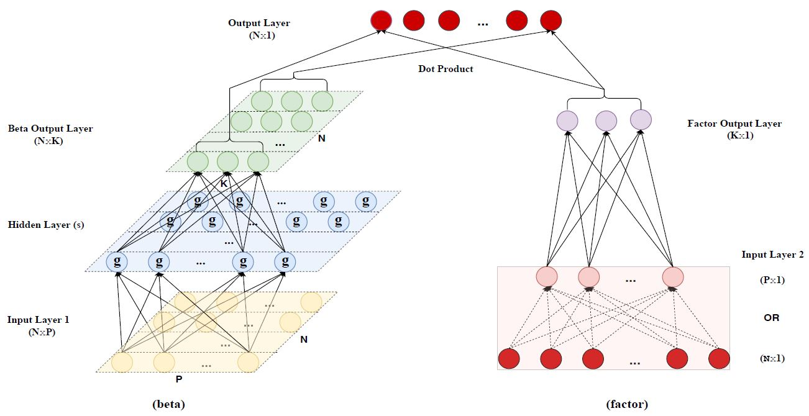

Paper Review - Autoencoder Asset Pricing Models#
코드로 구현하기 전에, 해당 논문을 같이 읽어보겠습니다. 주저자인 Shihao Gu는 시카고 부스 경영대학원의 교수이며, 논문의 공동저자인 Bryan Kelly는 Yale 대학의 교수, Dacheng Xiu는 시카고 부스 경영대학원의 교수입니다. 유진 파마도 시카고 부스 경영대학원의 교수였습니다. 이러한 배경을 알고 있다면 논문의 내용을 더 잘 이해할 수 있습니다.
Keywords
Stock returns, Conditional asset pricing model, Nonlinear factor model, Machine learning, Autoencoder, Neural networks, Big data
0. Abstract#
새로운 잠재 요인 조건부 자산 가격 책정 모델을 제안합니다. Kelly, Pruitt, Su(KPS, 2019)와 마찬가지로, 우리 모델은 자산 특성과 같은 공변인에 따라 달라지는 잠재 요인 및 요인 노출을 허용합니다. 그러나 KPS의 선형성 가정과 달리, 우리는 요인 노출을 공변량의 유연한 비선형 함수로 모델링합니다. 이 모델은 머신러닝 문헌의 대표적인 비지도 차원 축소 장치인 자동 인코더 신경망을 개조하여 수익률 자체와 함께 공변수의 정보를 통합합니다. 이를 통해 비선형 조건부 노출 및 관련 잠재 요인에 대한 추정치를 제공합니다. 또한, 당사의 머신러닝 프레임워크는 차익거래 금지라는 경제적 제한을 부과합니다. 당사의 자동 인코더 자산 가격 책정 모델은 다른 주요 요인 모델에 비해 표본 외 가격 책정 오차가 훨씬 작고 일반적으로 미미합니다.
1. Introduction#
최근 자산 가격 책정 문헌에서 특성 기반 자산 수익률 예측에 대한 ‘이상치’ 관점에 이의를 제기하는 논문이 등장했습니다. 이상치 관점에서는 특정 자산 속성이 총 위험 노출에 대한 보상으로 보장되는 예상 수익률 변동폭 이상으로 수익을 예측할 수 있는 힘을 가지고 있다고 주장합니다. Kelly, Pruitt, Su(KPS, 2019)는 이러한 소위 이상 자산 특성이 실제로는 위험 요인에 대한 관측 불가능하고 시간에 따라 변화하는 노출을 대리한다는 실증적 증거를 제공하며, 요인 노출에 대한 설명력을 고려하면 특성이 이상 수익률 예측력을 거의(또는 전혀) 포함하지 않는다는 것을 보여줍니다. 즉, 특성은 보상된 총 위험 노출을 정확히 찾아내는 데 도움이 되기 때문에 수익률을 예측하는 것으로 보입니다.
KPS가 제안하는 자산 가격 모델은 개별 수익률 \(r_{i,t}\) 이 \(K\) 팩터 구조를 갖는다고 가정합니다:
$\(r_{i,t} = \beta(z_{i,t-1})'f_t + u_{i,t}\)$ – (1)
요인 \(f_t\)는 잠재 요인으로 취급되며, \(K × 1\) 조건부 요인 노출 \(\beta(z_{i,t-1})\)는 자산 특성 \(z_{i,t-1}\)의 \(P × 1\) 벡터의 함수이며, 여기서 \(P\)는 잠재적으로 고차원이며 엄밀히 말해 \(K\)보다 큽니다. KPS는 \(P\) 특성에서 \(K\) 베타로의 맵이 선형이라는 단순화 가정을 합니다:
$\(\beta(z_{i,t-1})' = z_{i,t-1}'\Gamma\)$ – (2)
베타 함수와 잠재 요인 모두에 대해 특히 추적 가능한 추정 전략으로 이어집니다.
그럼에도 불구하고 이 편리한 선형성 가정에 대한 이론적 또는 직관적 근거는 명확하지 않습니다. 오히려 이 가정이 위반될 것으로 예상할 수 있는 여러 가지 이유가 있습니다. 기본적으로 모든 주요 이론적 자산 가격 모델은 수익률 역학이 상태 변수의 함수로서 비선형적이라고 예측하는데, Campbell과 Cochrane(1999), Bansal과 Yaron(2004), He와 Krishnamurthy(2013)가 대표적인 예입니다. 이론은 또한 산토스와 베로네시(2004)의 일반균형 모델에서 볼 수 있듯이 요인 위험 노출의 복잡한 역학을 예측합니다. 또한 Pohl 등(2018)은 비선형 모델에 대한 선형 근사치가 주식 프리미엄의 크기 또는 수익률 예측 가능성에 대한 모델 예측에서 상당한 오차를 초래할 수 있음을 보여줍니다.
우리는 autoencoder를 사용하여 (1)의 요인 모델을 일반화합니다. 자동 인코더는 머신 러닝 분야의 대표적인 차원 축소 모델입니다. 주성분 분석(PCA)에 대응하는 비선형 신경망으로 생각할 수 있습니다. 자동 인코더와 PCA는 모두 비지도 방식으로, 수익률 자체만을 입력으로 사용하여 전체 자산 수익률 패널을 모델링하려고 시도합니다. 두 방법의 통계적 내용은 수익률 데이터 세트를 간결하게 표현하도록 하는 병목 현상이 있습니다. PCA 병목 현상은 N개의 개별 수익률에서 K ≪ N개의 요인으로 선형 매핑을 사용하는 반면, 자동 인코더는 신경망을 통한 비선형 매핑을 허용합니다.
두 방법 모두 표준 형태에서는 공변량 정보를 사용하여 차원 축소를 유도합니다. KPS는 공변량의 정보가 식 (2)를 통해 축소를 유도할 수 있지만 선형 모델 공식에 의존하는 ‘계측형’ PCA(IPCA)를 제안합니다.
이 논문에서는 개별 주식 수익률에 대한 새로운 조건부 자동 인코더 모델을 소개합니다. 이 모델은 IPCA와 마찬가지로 공변량이 차원 축소를 안내하는 데 도움이 됩니다. 당사의 자동 인코더는 신경망 기반 수익률을 저차원 요인 집합으로 압축하여 주식 특성 공변수가 요인 노출에 비선형적이고 상호 작용하는 효과를 가질 수 있도록 합니다. 동시에 자동 인코더를 구조화할 때 경제적인 선택을 통해 팩터를 포트폴리오로 해석할 수 있도록, 즉 개별 주식 수익률의 선형적 조합으로 구성합니다. 궁극적으로 우리의 모델은 비선형 조건부 자산 가격 책정 모델로, 공변수를 베타로 매핑하는 유연한 신경망을 통해 비선형성이 나타납니다.
이 논문은 머신러닝과 자산 위험 프리미엄 연구를 결합한 새로운 연구 아젠다를 제시합니다.(Gu et al., 2019)는 감독된 예측 모델에 초점을 맞추지만 위험과 수익의 상충관계에 대해서는 언급하지 않습니다. 즉, 이들의 접근 방식은 자산 가격 책정 모델을 구성하지 않습니다.
이 논문에서는 위험-수익 트레이드오프를 명시적으로 모델링하는 비지도 및 반지도 학습 방법을 사용하여 자산 가격 책정 모델을 개발합니다. 자동 인코더는 머신러닝 핵심 도구로, 다양한 실제 애플리케이션에서 성공을 거둔 바 있습니다. 본 논문은 자동 인코더에 대한 방법론 문헌과 요인 가격 모델에 대한 대규모 금융 문헌을 연결합니다.
특히 조건부 요인 가격 책정 모델에 초점을 맞춘 KPS는 우리 분석의 가장 가까운 전신입니다. 이들은 선형 잠재 요인 APT 모델에 대한 문헌(Ross, 1976년부터 시작)과 특성 기반 ‘이상’ 수익률 예측에 대한 문헌을 통합합니다. 우리의 기여 중 하나는 수익률 요인 구조의 일반적인 비선형 사양을 허용하여 이들의 작업을 확장하는 것입니다. 이를 위해 조건부 베타 사양에 신경망을 내장하여 기존의 자동 인코더를 보강하고, 유연한 비선형성과 상호 작용을 통해 위험 노출을 결정할 수 있는 특성을 허용하여 KPS의 선형 계측된 베타 사양을 일반화했습니다.
이와 관련된 또 다른 선행 연구로는 (Kozak 외, 2018)가 있는데, 이들은 이상으로 분류된 포트폴리오의 주성분을 사용하여 자산 가격 책정을 위한 요인 분석 접근법을 제안합니다(이 접근법에 대한 초기 문헌은 Chamberlain과 Rothschild, 1983; Connor와 Korajczyk, 1986에서 예시한 바 있습니다). 그러나 이 접근법은 테스트 자산이 개별 주식인 경우 위험과 수익의 상충관계를 설명하지 못합니다. 조건부 자동 인코더 모델은 이러한 단점이 없습니다.
이 모델은 개별 주식뿐만 아니라 이상 종목이나 기타 주식 포트폴리오에 대해서도 위험과 기대수익을 정확하게 설명합니다. 더 넓게 보면, 조건부 자동 인코더 공식이 유효한 자산 가격 책정 모델임을 보여줍니다. 이는 확률론적 할인율에 대한 비모수적 모델과 동일하며, 무차익거래 가격 책정이라는 경제적 제한을 부과합니다. 조건부 자동 인코더가 가격 책정 모델로서 경험적으로 성공적이라는 것을 보여주는 한 가지 예는 가격 책정 오류가 작고 미미한 소위 변칙 포트폴리오의 가격을 정확하게 책정한다는 것입니다. 순수 표본 외 기준으로 측정된 우리 모델의 가격 책정 오류는 기존의 파마-프렌치 요인 모델에서 발생하는 가격 책정 오류의 일부에 불과합니다.
2. Methodology#
Autoencoder and PCA#
PCA와 오토인코더의 관계를 간단하게 생각해보면, 오토인코더는 PCA의 확장된 버전이라고 볼 수 있습니다. 만약 오토인코더가 단 하나의 은닉층만 가지고 있고, 그 층에서 선형 활성화 함수만을 사용한다면, 이는 기본적으로 PCA와 같은 역할을 하게 됩니다.
그러나 오토인코더의 장점은 여기서 끝나지 않습니다. 여러 층을 추가하고 다양한 활성화 함수를 도입함으로써, 오토인코더는 데이터의 복잡한 특성과 구조를 더 깊게 파악하고 모델링할 수 있게 됩니다.
Conditional Autoencoder and IPCA#
비지도학습 방식은 시장의 구조적 정보를 효과적으로 학습하는 데 유용하나, 수익률 외의 다른 데이터를 조건 정보로 활용하는 데 한계가 있습니다. KPS는 이러한 문제를 해결하기 위해 외부 정보를 활용하여 factor loading을 주식의 특성에 따른 선형 함수로 추정하고, 이를 동적으로 업데이트하는 방식을 채택하였습니다.
외부 정보, 예를 들면 주식의 특성을 활용하면 factor loading의 추정 정확도가 향상되며, 이에 따라 해당 loading을 가진 잠재적인 팩터의 품질도 개선됩니다. 본 논문에서는 IPCA를 활용하여 beta와 z 사이의 선형 관계를 일반화하여 새로운 모델을 제시하였습니다.

전체 구조를 보면 크게 두 부분, 즉 왼쪽과 오른쪽으로 나뉘어져 있습니다. 왼쪽 부분은 factor loading을 도출하는 모델로 작동하며, 오른쪽 부분은 latent factor를 추출하는 역할을 합니다. 최종적으로는 이 두 부분의 결과를 결합(dot product)하여 수익률을 재현하게 됩니다.
Beta 부분
왼쪽의 beta 계산 부분을 자세히 살펴보면, 입력으로 N×P 행렬이 주어집니다. 여기서 N은 종목의 수를, P는 각 종목의 특성 수를 나타냅니다. 이 행렬은 뉴럴 네트워크를 통과하여 N×K 형태의 행렬로 변환됩니다. 여기서 K는 잠재 팩터의 개수로, 이 값은 오른쪽 모델에서 도출된 factor 값과 함께 사용되어 종목의 수익률을 계산하는 데 활용됩니다.
Factor 부분
오른쪽 모델에는 두 가지 선택지가 있습니다. 첫 번째로, 개별 주식의 수익률을 입력으로 사용할 경우, 이 모델은 표준 오토인코더와 유사한 구조를 가지게 됩니다. 이렇게 학습을 진행하면, 오토인코더는 수익률 간의 관계를 내부의 뉴런(보라색 부분)에 저장하게 되며, 이 뉴런은 포트폴리오의 선형 조합을 의미하게 됩니다.
또 다른 방법으로, 개별 주식 대신 각 특성별로 구성된 포트폴리오의 수익률을 입력으로 사용할 수 있습니다. 이 경우, 입력의 형태가 N×1에서 P×1로 변경됩니다. 이 방식은 전통적인 오토인코더의 형태와는 다르게 보일 수 있지만, 이 구조는 팩터 자체가 포트폴리오(기초 자산 수익률의 선형 조합)라는 팩터의 경제적 해석을 유지한다는 점에서 허용됩니다.\
실제로 팩터 네트워크에서 개별 주식 수익률의 전체 단면을 사용하는 데는 두 가지 어려운 장애물이 있습니다.
첫 번째는 표본에 포함된 개별 기업의 수가 약 3만 개에 달해 요인 네트워크의 가중치 매개변수 수가 천문학적으로 많을 수 있는 반면, 데이터 세트의 시계열 관측 횟수는 720회에 불과하다는 점입니다. 둘째, 패널의 균형이 극도로 불균형하여 특정 월에 평균 약 6,000개의 주식이 누락되지 않으므로 대부분의 주식 수준 가중치 매개변수는 극소수의 시계열 관측치로부터 추정해야 합니다.
따라서 모델의 계산 비용을 크게 줄일 수 있도록 모델의 요인 측면에 한 가지 핵심적인 수정을 가했습니다. 방정식 (13)에서 주식 수익률의 전체 단면으로 네트워크를 초기화하는 대신 다음과 같이 정의된 포트폴리오 집합으로 네트워크를 초기화합니다.
3. An empirical study of US equity#
CRSP 데이터베이스를 통해 NYSE, AMEX, NASDAQ의 모든 종목에 대한 1957년 3월부터 2016년 12월까지, 즉 60년 동안의 데이터를 활용했습니다. 이 연구에서는 총 94개의 종목 특성을 조건 정보로 사용했는데, 이 중 61개의 특성은 연간 기준으로, 13개는 분기별로, 그리고 20개는 월별로 갱신되는 정보입니다. 이 94개 특성의 상세 리스트와 선택 기준은 GKX 논문에서 확인할 수 있습니다.
데이터를 사용할 때 lookahead bias, 즉 미래의 정보를 미리 알고 있다는 편향을 피하기 위해, 재조정 월의 한 달 전까지의 정보만을 기반으로 데이터셋을 구성했습니다. 전체적으로 약 3만 개의 종목 데이터를 활용하였으며, 평균적으로 한 달에 6200개 이상의 종목 데이터로 모델을 구성했습니다.
데이터 분할 방식은 다음과 같습니다: 1957년부터 1974년까지, 총 18년 동안의 데이터를 훈련 데이터로 사용하였고, 1975년부터 1986년까지, 즉 12년 동안의 데이터를 검증 데이터로 활용하였습니다. 마지막으로, 1987년부터 2016년까지의 10년간의 데이터를 테스트 데이터로 사용하였습니다.
모델 구성
이 연구에서는 여러 모델을 비교 분석하기 위해 PCA, IPCA, 그리고 조건부 오토인코더 4개의 모델을 사용하였습니다. 이 조건부 오토인코더 모델들은 은닉층과 뉴런의 수에 따라 다르게 구성되었습니다. 또한, 이미 잘 알려진 팩터를 기반으로 한 벤치마크 포트폴리오, 즉 Fama-French 5 팩터 모델도 함께 사용하여 성능을 비교하였습니다.
학습 과정
모델 학습에 사용된 주요 정보와 방법은 다음과 같습니다. 손실 함수로는 L2를, 정규화로는 L1을 사용하였습니다. 또한, 과적합을 방지하기 위해 Early stopping 기법을 적용하였고, 모델의 안정성을 높이기 위해 Ensemble 방식을 사용하였습니다. 최적화 알고리즘으로는 minibatch SGD를 사용하였으며, 학습 과정에서의 안정성을 위해 batch normalization도 적용하였습니다.
성능 평가
성능 평가 지표로는 KPS에서 사용한 \(R^2_{total}\)와 \(R^2_{pred}\)를 동일하게 사용하였습니다. 이러한 지표들은 모델의 예측 성능을 정량적으로 평가하기 위한 것으로, 각 지표의 정의는 본문에서 상세하게 설명되어 있습니다.
Risk vs Mispricing
이 주제는 매우 자주 논의되는 주제로, 특히 Chicago Booth 학교의 연구에서 더욱 강조되는 경향이 있습니다. 주요한 논점은 수익률의 예측 가능성이 주로 종목의 특성, 즉 위험 팩터에 의해 발생한다는 것입니다. 이를 검증하기 위해 intercept 테스트를 진행하였습니다.
이 연구의 핵심은 95개의 포트폴리오 수익률을 종목 특성을 기반으로 얼마나 잘 설명하는지, 그리고 모델이 설명하지 못한 부분(잔차)의 평균이 통계적으로 0과 다른지를 검증하는 것입니다. 간단히 말하면, ‘알파’ 즉, 위험 요소를 고려하지 않고 얻을 수 있는 추가 수익률이 얼마나 있는지를 확인하는 과정입니다. 여기서 ‘알파’는 수익률의 예측에서 나타나는 오차, 즉 잔차를 의미합니다.
95개의 포트폴리오 수익률과 각 모델의 예측값을 비교한 결과, 벤치마크로 설정된 Fama-French 모델에서는 37개의 경우에서 잔차가 통계적으로 유의미하게 0과 다르게 나타났습니다. 반면, 조건부 오토인코더 모델에서는 대부분 10개 미만의 경우에만 그러한 현상이 관찰되었습니다. 이를 통해 이 연구는 조건부 오토인코더 모델이 위험과 수익률 사이의 관계를 더욱 정확하게 설명한다고 주장하고 있습니다.